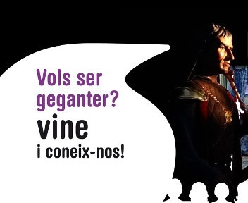
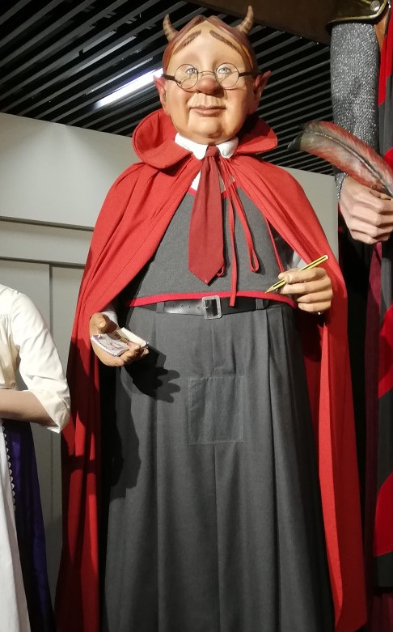

Vols seguirnos a les nostres trobades?
Aqui tens les nostres properes torbades
Quins son el nostres gegants??
Nosaltres tenim diferents gegants com els que enumerarem ara.
Gegants vells

Noms: Ferran i Isabel
Any de construcció: 1942-1943
Estrena: 1946
Constructor: Taller El Ingenio
Mesura: 3,70m
Pes: 44kg
Gegants nous

Noms: Diable i Velleta
Any de construcció: 1992
Constructor: Jordi Grau
Mesura: Ell 3,80m ella 3,56m
Pes: Ell 64kg i ella 50kg
Gegantò

Nom: Secretari Garvil
Any de construcció: 2003
Constructor: Jordi Grau
Mesura: 2,65m
Pes: 24kg
Gegantons

Noms: Diable petit i Velleta petita
Any de construcció: Ell 2017 i ella 2022
Constructor: Jordi Grau
Mesura: Ell 2,18 i ella 1,97
Pes: Ell 20kg i ella no ho sabem
Gegantons